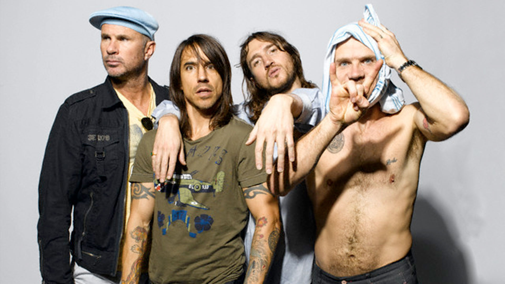

Red Hot Chili Peppers es una banda de rock estadounidense formada en 1983 en Los Ángeles, California. Sus integrantes son el vocalista Anthony Kiedis, el guitarrista John Frusciante, el bajista Flea y el baterista Chad Smith. El estilo musical de la banda fusiona el funk tradicional con el rock y el rock alternativo incluyendo elementos de otros géneros como el rap, pop rock, heavy metal, dance, punk, hip hop e indie rock.12 Aunque en algunos sitios son considerados los inventores del punk funk. Además de Kiedis y Flea, la formación original del grupo la completaban el baterista Jack Irons y el guitarrista Hillel Slovak. En las grabaciones de los primeros discos hubo diversos cambios en la formación, y solo en The Uplift Mofo Party Plan (1987) coincidieron los cuatro miembros fundadores en el estudio. En 1988 el guitarrista Hillel Slovak murió de una sobredosis de heroína, lo que provocó la salida de Irons del grupo